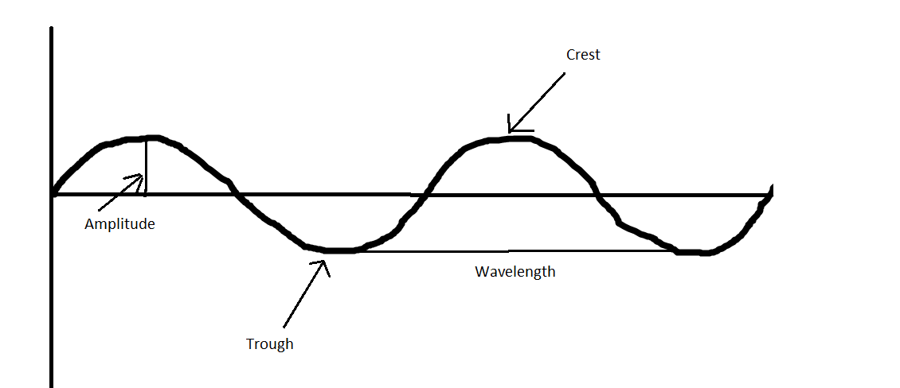

Mechanical waves are waves that need a meduim
to travel through. Mechanical waves do not exist in outer
space because there is no matter in space (that's why
you can't hear sound in space). These waves travel faster
through dense matter, such as solids, and slower through
less dense matter, like gases.
A medium is matter through which a wave travels through.
Types of Mechanical Waves
There are two types of mechanical waves, transverse waves and
longitudinal waves.
Transverse Waves
Transverse waves are waves that move up and down, the energy
they carry moves perpendicular to the wave. Transverse waves
have a trough, a crest, an amplitude, and a wavelength.
A crest is the highest point on a wave, and a trough is the
lowest. The amplitude of a wave is the height of a wave. The
wavelength is the length of a wave.
Examples of Transverse
waves inlude people doing the wave during sports events, light waves,
and water waves.

Longitudinal Waves
Longitudnal waves (also known as compression waves) are waves that
move parallel to the energy they carry. They have a compression,
a rarefaction, and a wavelength (just like transverse waves).
a compression is the part of the longitudinal wave where the
particles are close together and a rarefaction is where the
particles are more spread out.
Examples of longitudinal waves
are slinkies, sound waves, and tsunami waves.